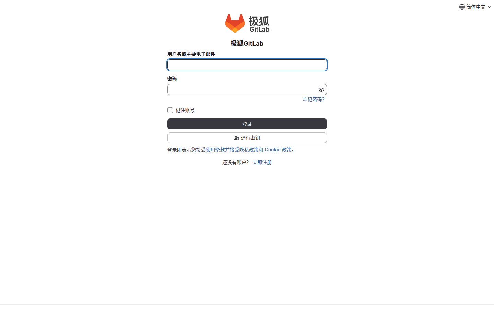
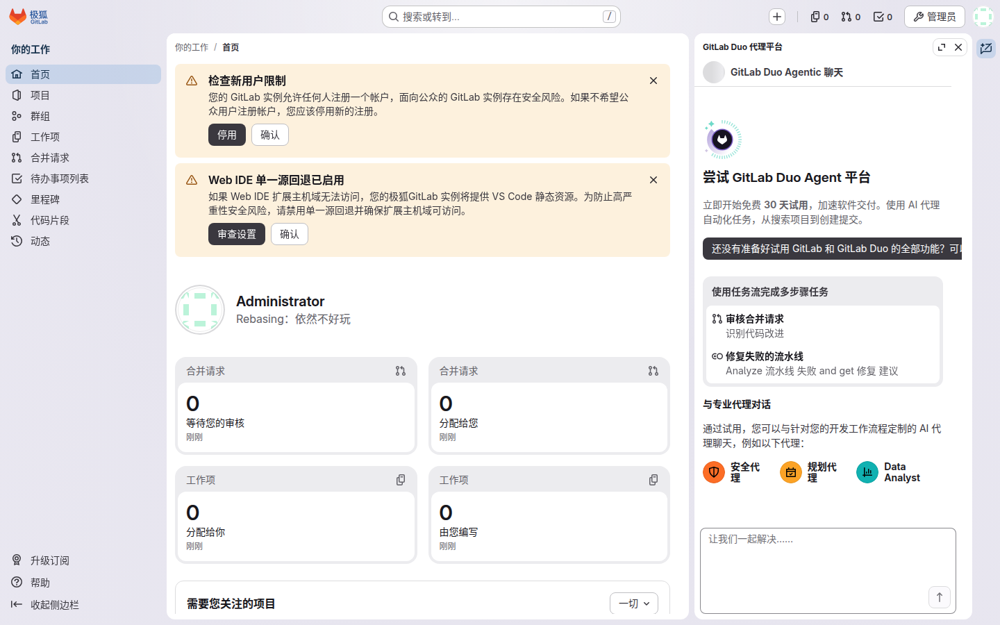
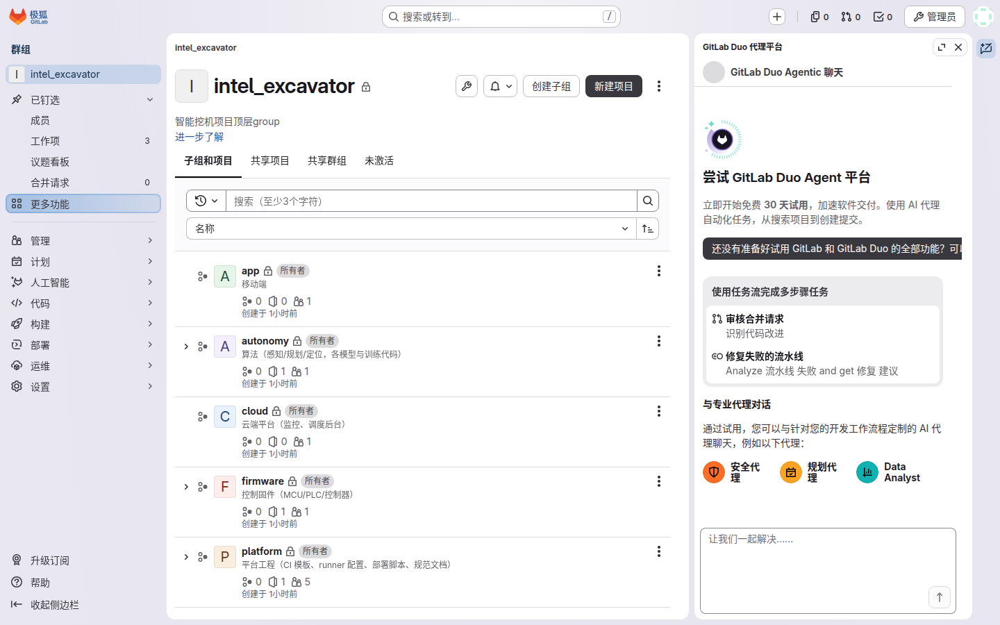
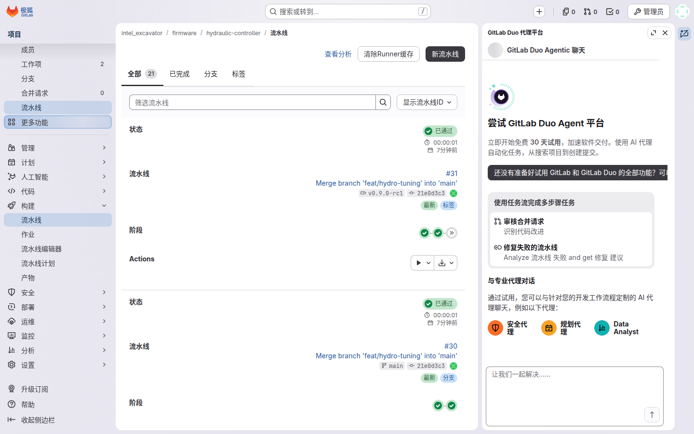
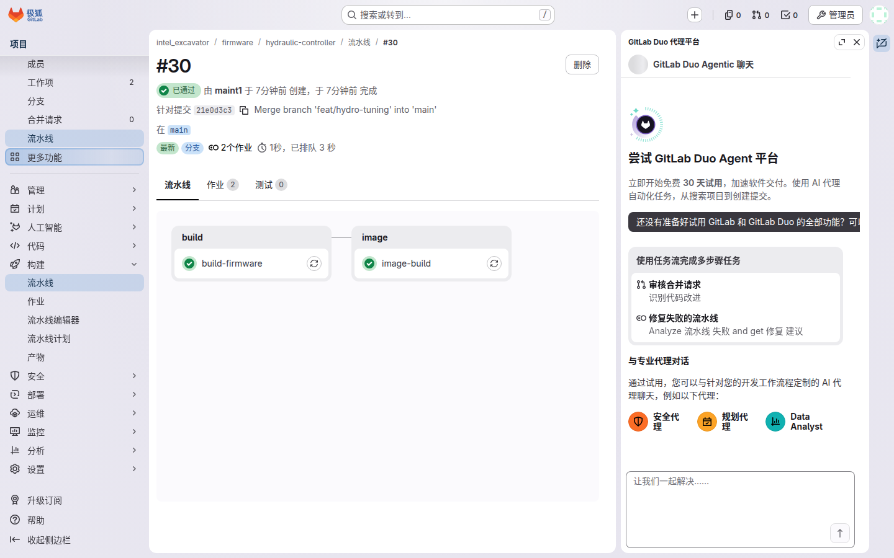
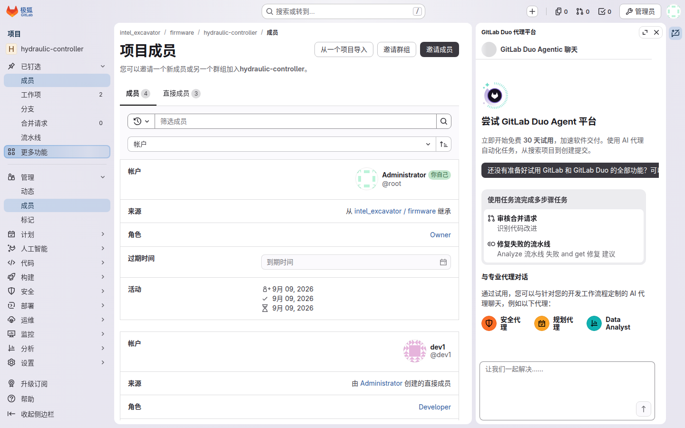

角色导航
开发工程师
写代码的人
Developer 30分支 · MR · 等CI绿
仓库 Owner守门与发布的人
Maintainer 40评审 · tag · Release
只读协作者只看不动代码的人
Guest 10项目页 · 制品下载
平台工程管 CI 模板的人
platform 组 Maintainer宪法 · 模板 · 传播
驻场工程师出差在现场的人
出场前 Developer / 现场 Guest离线 · 刷固件 · 补MR
需求提出人与管理者提需求看进度的人
提单人 Guest / 管理者 Reporter提单 · 看板 · 里程碑
通用入门
无论哪种角色，日常都从这 4 个基本动作开始：登录、找到自己的项目组、看懂一条流水线、看成员与权限。
1
登录页 ｜ 账号找平台组开，域账号即登录账号
登录
浏览器打开 GitLab 地址，进入登录页。账号由平台组统一开通，集团域账号就是登录账号，不需要也不能自己注册。

🔍 为什么不能自己注册账号？
系统对接集团 LDAP 域账号，禁止本地建账号——入职自动有权限，离职自动收回，不靠人手记得删号（设计 §4.3）。
2
登录后的主面板 ｜ 左侧「群组」快捷入口
组结构树 ｜ intel_excavator 下按产品域分 6 个子组
找到自己的项目组
登录后从主面板左侧的「群组」入口进入，找到顶层组 intel_excavator。

intel_excavator 下按产品域分为 firmware / autonomy / vehicle / cloud / app / platform 六个子组，日常的仓库都在各产品域子组里。

🔍 为什么按产品域分组，不按团队分组？
团队会重组，产品域相对稳定（设计 §4.1）。
3
流水线列表 ｜ 每次 push 一条
流水线详情 ｜ 绿=通过，红=失败，点开看日志
看懂一条流水线
进入项目后，左侧 构建 → 流水线 即流水线列表：每次 push 代码都会自动新增一条。

点开任意一条看详情：绿色 = 通过，红色 = 失败。失败时点进对应的 job（任务）看日志，日志最后几十行通常就是报错原因。

🔍 为什么每次 push 都要自动跑一遍？
编译和测试由服务器统一执行，质量不靠自觉；红了必须修，才能保证 main 分支随时可用（设计 §6.2）。
4
项目成员页 ｜ 谁是 Owner 一目了然
看成员与权限
项目左侧 管理 → 成员 列出谁在这个仓库里、是什么角色：Developer 是干活的开发，Maintainer 就是这个仓库的 Owner（守门人）。

🔍 为什么只设三级权限？
全项目只用 Guest / Developer / Maintainer 三级，每个仓库 1–2 名 Maintainer 即 Owner——权限层级越少，责任越清楚（设计 §4.3）。
🔍 产物去哪了？（二阶段新增，§6.4）
三类产物三个家：固件 .bin → GitLab Release 附件；容器镜像 → Harbor；大文件/模型权重 → MinIO（git 里只存清单与指针）。各角色教程会带你走到自己该碰的那个家。

🔍 有需求 / 缺陷要提？（三阶段新增）
全部来源只进一个口——受理台（intel_excavator/intake）按模板建单，3 个工作日内分诊；进度看组看板与里程碑。见需求提出人与管理者教程。
术语速查
| 术语 | 白话 |
|---|---|
| MR（Merge Request） | "请把我分支上的改动合进 main" 的申请，别人评审通过才算数 |
| CI / 流水线 | 服务器替你自动编译+测试；push 后自动跑，红了必须修 |
| 保护分支 main | 只能通过 MR 合入，谁都不能直接 push 的主干 |
| tag / Release | 给某个 commit 贴版本号（tag）；Release 是带附件的正式发布页 |
| manifest.json | 藏在制品里的"身份证"：哪个 commit、何时、哪台机器构建 |
| ci-templates | 全项目共用的 CI 模板仓库，规则改一处、全部仓库生效 |
| Harbor | 容器镜像仓库：CI 构建的镜像归宿在这里，构建区拉 base 镜像也走它的代理 |
| MinIO | 对象存储：数据集、模型权重等大文件归宿，git 里只存清单与指针 |
| 投放区 | 现场数据 write-only 投放桶：只能往里投，不能删/列别人的 |
| DLP | 集团防泄漏系统：终端透明加解密——文件在硬盘上自动加密，拷出去打不开 |
| 受理台（intake） | 所有需求 / 缺陷的唯一进料口仓库：按模板建单，3 日内分诊 |
| 分诊 | 域 Owner 把单移交 / 打回 / 婉拒，并代打来源与状态标签 |
| 状态:: / 来源:: 标签 | 形如"状态::待受理"的全组统一标签——看板列就来自它 |
| 里程碑 | 版本节点（如"固件 v2.3·2026Q4"），进度按单数百分比看 |
| Closes #单号 | 写在 MR 描述里的关单指令：代码合入那一刻，单自动关闭 |